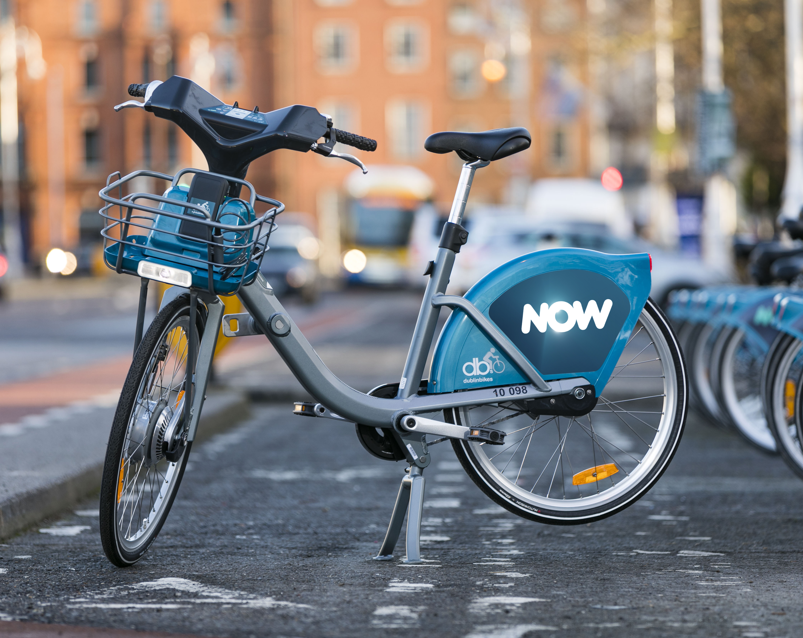

Dublin Bikes
Discover the city with our bike rental service
Discover the city with our bike rental service
Dublin Bikes is the premier bike rental service in Dublin, offering a wide range of high-quality bikes for tourists and locals alike. Our mission is to make bike rental easy, accessible, and enjoyable for everyone. Explore the beautiful city of Dublin on two wheels and experience the vibrant culture, stunning architecture, and picturesque landscapes.
With numerous rental locations across the city, friendly staff, and competitive pricing, Dublin Bikes is your go-to choice for bike rentals in Dublin. Join us today and discover the joy of cycling through the charming streets of Dublin!

Explore the most scenic bike routes around Dublin. Discover and enjoy the most picturesque and scenic bike routes around Dublin, the charming capital of Ireland. With a rich history, vibrant culture, and an abundance of stunning landscapes, Dublin offers a unique cycling experience that caters to all skill levels and interests. Whether you're a casual rider seeking leisurely rides or an avid cyclist looking for challenging adventures, Dublin's diverse bike routes provide a multitude of options to satisfy your cycling desires. As you embark on your cycling journey, immerse yourself in the city's iconic landmarks, such as Phoenix Park, the largest urban park in Europe, which houses Dublin Zoo and the President's residence. Ride along the scenic River Liffey, crossing the iconic Ha'penny Bridge, and experience the rich history and lively atmosphere of Temple Bar. For those craving a taste of nature, venture beyond the city limits and explore the nearby Dublin and Wicklow Mountains, where you'll find exhilarating trails with breathtaking views of the surrounding countryside. Cycle along the picturesque coastline, visiting charming coastal towns like Howth and Dun Laoghaire, and marvel at the beauty of the Irish Sea. Dublin also boasts an extensive network of well-maintained cycle paths that traverse its many parks, nature reserves, and greenways. The Grand Canal Greenway, a tranquil route that runs along the historic Grand Canal, offers a delightful escape from the bustling city and the opportunity to observe local wildlife in a serene setting. With so many incredible routes to choose from, Dublin's cycling scene promises endless opportunities for adventure and exploration. So, gear up, hop on your bike, and embark on an unforgettable journey through the enchanting streets and landscapes of Dublin.
Keep your bike in top condition with our repair services. Maintaining your bike in top condition is essential for a smooth and enjoyable cycling experience. With our comprehensive repair services, you can ensure your bicycle remains in optimal working order, allowing you to make the most of your rides and explore the captivating city of Dublin with confidence and ease. At our well-equipped repair center, our team of experienced and skilled technicians is dedicated to providing exceptional service and expert advice tailored to your specific needs. We understand that each cyclist has unique requirements and preferences, and we strive to deliver personalized solutions that cater to your individual expectations. Our range of repair and maintenance services includes routine tune-ups, thorough inspections, and necessary adjustments to ensure your bike performs at its best. From simple tasks such as tire inflation, brake adjustments, and chain lubrication to more complex procedures involving drivetrain overhauls, wheel truing, and component replacements, we cover all aspects of bicycle care. We also recognize the importance of staying up-to-date with the latest industry advancements and technologies. Our technicians continuously expand their knowledge and expertise, enabling them to work on a wide variety of bike types and models, including road bikes, mountain bikes, e-bikes, and more. Rest assured that your bicycle is in capable hands, regardless of its make or complexity. In addition to our repair services, we offer valuable guidance and recommendations on proper bike maintenance, empowering you to take charge of your bicycle's upkeep and prolong its lifespan. We believe that an informed cyclist is a safer and more efficient rider, and we are committed to sharing our wealth of knowledge to enhance your overall cycling experience. At our repair center, your bike's performance and your satisfaction are our top priorities. Trust in our expertise and dedication to keep your bicycle in excellent condition, allowing you to fully enjoy the exhilarating freedom and adventure that cycling in Dublin has to offer.

Embark on a fascinating journey through Dublin's rich history and vibrant culture by joining our expertly guided bike tours. As you traverse the city's charming streets and scenic pathways, you will gain a deeper understanding of Dublin's unique character, its remarkable past, and the factors that have shaped its present-day identity. Our knowledgeable and friendly tour guides possess a wealth of information about Dublin's most iconic landmarks, hidden gems, and local lore. They are passionate about sharing their insights and captivating stories, ensuring that each tour is an engaging and memorable experience for every participant. Whether you are a history buff, a culture enthusiast, or simply seeking a fun and immersive way to explore the city, our guided tours cater to a diverse range of interests and backgrounds. As you cycle along our carefully curated routes, you will encounter an array of historical sites, architectural wonders, and cultural hotspots that showcase the many facets of Dublin's heritage. From ancient castles and medieval cathedrals to modern museums and bustling marketplaces, our tours weave together a captivating tapestry of the city's past and present. Along the way, you will also discover lesser-known attractions and hidden treasures that offer a glimpse into Dublin's more intimate and personal stories. In addition to our historical and cultural tours, we also offer themed excursions that delve into specific aspects of Dublin's identity, such as its literary heritage, culinary scene, or thriving arts community. These specialized tours provide a unique opportunity to immerse yourself in a particular area of interest and gain a more nuanced appreciation of Dublin's multifaceted personality. Our guided bike tours prioritize safety, comfort, and enjoyment for all participants. We carefully select our bikes and equipment to ensure a smooth and enjoyable ride, and our guides are always on hand to provide assistance and support as needed. Furthermore, our tours are designed to accommodate various skill levels and fitness abilities, ensuring that everyone can participate and revel in the delights of exploring Dublin on two wheels. Join us for an unforgettable adventure that delves into the heart of Dublin's history and culture, and experience the true essence of this enchanting city as you pedal your way through its captivating streets and picturesque landscapes.